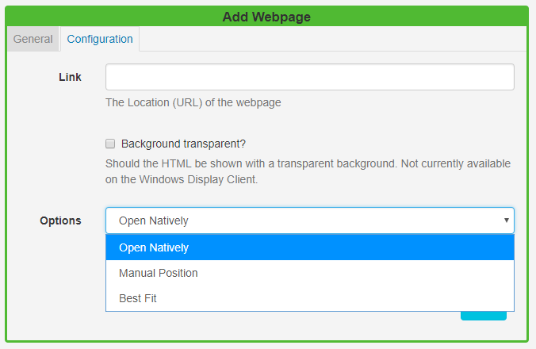

Webpage
Add the Webpage Widget to Layouts to show an entire Webpage embedded inside a Region.
There is support for scaling and offsetting the target webpage to allow for a particular section of a webpage to be defined to display.
Click on the Webpage Widget on the toolbar, add / drag to the target Region.
If you are using 1.8, select Webpage from the Widget Toolbox to add to your Region Timeline and complete the form fields as explained below.
General
- Provide an optional name.
- Choose to override the default duration.
Configuration

Link
- Provide the URL (including
http://) of the webpage. - Use the checkbox to render the webpage with a transparent background (currently not available on the Windows Player). SFC Technology will try its best to do this when checked, however, it cannot be supported on some webpages.
After the page is rendered SFC Technology will scale to fit within the Region.
Webpages are not cached by the Player, this Module requires a valid internet connection in order to function.
Options
Select from 3 options to choose how the webpage should be embedded:
-
Open Natively
The Player will open the webpage without any alterations and will open and render in the browser as if the URL had been visited on the device outside Sfc technology.
Please note: There is no preview available for this option.
-
Manual Position
Embed the webpage by specifying dimensions which can be used to force the page to fit within certain pre-set dimensions.
Page Width - specify the width of the page
Page Height - specify the height of the page
Offset Top - the top position for the page to start
Offset Left - the left position for the page to start
Scale Percentage - percentage zoom to apply to the webpage
-
Best Fit
Specify a page width and page height.
Manual Position and Best Fit options will not work with websites that set the X-Frame-Options header. If you are unable to see the webpage use the Open Natively option when using Windows / Linux or Android. If X-Frame-Options is set then webOS/Tizen will not work in any mode.
If X-Frame-Options is not set then the website should show in any of the Players, using any of the above options.
Use the X-Frame-Options Header Checker Tool to see if the header has been set.